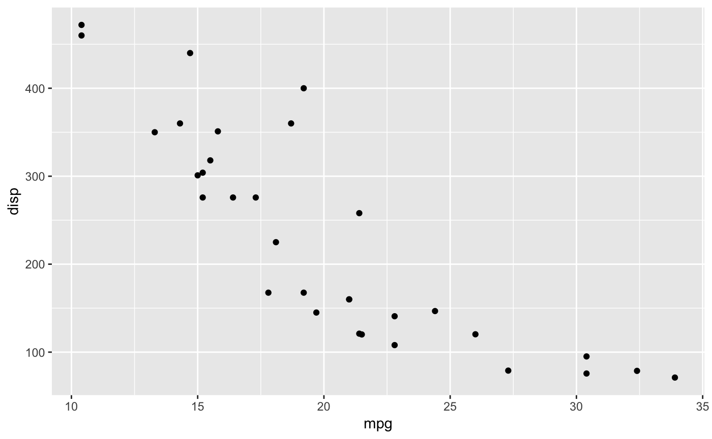

gtable is a layout engine build on top of the grid package. It is used to abstract away the creation of (potentially nested) grids of viewports into which graphic objects can be placed. The use of gtable makes it easy to ensure alignment of graphic elements as well as building up complex graphic compositions in a piecemeal fashion. gtable is the layout engine powering ggplot2 and is thus used extensively by many plotting functions in R without being called directly.
Installation
You can install the released version of gtable from CRAN with:
or use the remotes package to install the development version from GitHub
Example
As described above, ggplot2 uses gtable for laying out the plot, and it is possible to access the gtable representation of a plot for inspection and modification:
library(gtable)
library(ggplot2)
p <- ggplot(mtcars, aes(mpg, disp)) + geom_point()
p_table <- ggplotGrob(p)
p_table
#> TableGrob (12 x 9) "layout": 18 grobs
#> z cells name grob
#> 1 0 ( 1-12, 1- 9) background rect[plot.background..rect.45]
#> 2 5 ( 6- 6, 4- 4) spacer zeroGrob[NULL]
#> 3 7 ( 7- 7, 4- 4) axis-l absoluteGrob[GRID.absoluteGrob.32]
#> 4 3 ( 8- 8, 4- 4) spacer zeroGrob[NULL]
#> 5 6 ( 6- 6, 5- 5) axis-t zeroGrob[NULL]
#> 6 1 ( 7- 7, 5- 5) panel gTree[panel-1.gTree.17]
#> 7 9 ( 8- 8, 5- 5) axis-b absoluteGrob[GRID.absoluteGrob.25]
#> 8 4 ( 6- 6, 6- 6) spacer zeroGrob[NULL]
#> 9 8 ( 7- 7, 6- 6) axis-r zeroGrob[NULL]
#> 10 2 ( 8- 8, 6- 6) spacer zeroGrob[NULL]
#> 11 10 ( 5- 5, 5- 5) xlab-t zeroGrob[NULL]
#> 12 11 ( 9- 9, 5- 5) xlab-b titleGrob[axis.title.x.bottom..titleGrob.36]
#> 13 12 ( 7- 7, 3- 3) ylab-l titleGrob[axis.title.y.left..titleGrob.39]
#> 14 13 ( 7- 7, 7- 7) ylab-r zeroGrob[NULL]
#> 15 14 ( 4- 4, 5- 5) subtitle zeroGrob[plot.subtitle..zeroGrob.41]
#> 16 15 ( 3- 3, 5- 5) title zeroGrob[plot.title..zeroGrob.40]
#> 17 16 (10-10, 5- 5) caption zeroGrob[plot.caption..zeroGrob.43]
#> 18 17 ( 2- 2, 2- 2) tag zeroGrob[plot.tag..zeroGrob.42]As can be seen, a gtable object is a collection of graphic elements along with their placement in the grid and the dimensions of the grid itself. graphic elements can span multiple rows and columns in the grid and be gtables themselves allowing for very complex automatically arranging layouts.
A gtable object is itself a grob, and can thus be drawn using standard functions from the grid package:

While most people will interact with gtable through ggplot2, it is certainly possible to use it to build a plot up from the ground.
# Construct some graphical elements using grid
points <- pointsGrob(
x = runif(10),
y = runif(10),
size = unit(runif(10), 'cm')
)
xaxis <- xaxisGrob(at = c(0, 0.25, 0.5, 0.75, 1))
yaxis <- yaxisGrob(at = c(0, 0.25, 0.5, 0.75, 1))
# Setup the gtable layout
plot <- gtable(
widths = unit(c(1.5, 0, 1, 0.5), c('cm', 'cm', 'null', 'cm')),
heights = unit(c(0.5, 1, 0, 1), c('cm', 'null', 'cm', 'cm'))
)
# Add the grobs
plot <- gtable_add_grob(
plot,
grobs = list(points, xaxis, yaxis),
t = c(2, 3, 2),
l = c(3, 3, 2),
clip = 'off'
)
# Plot
grid.draw(plot)